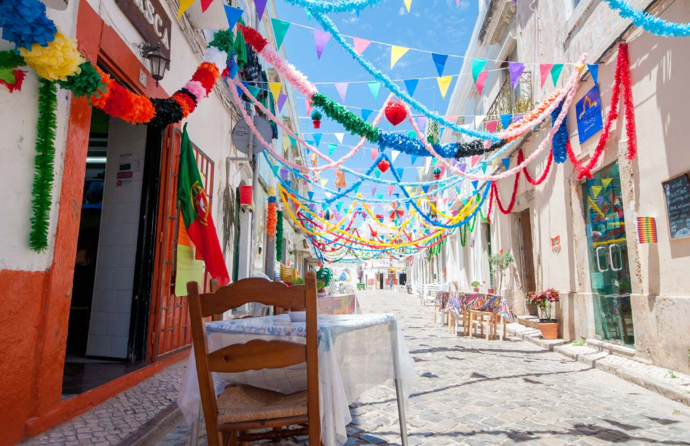
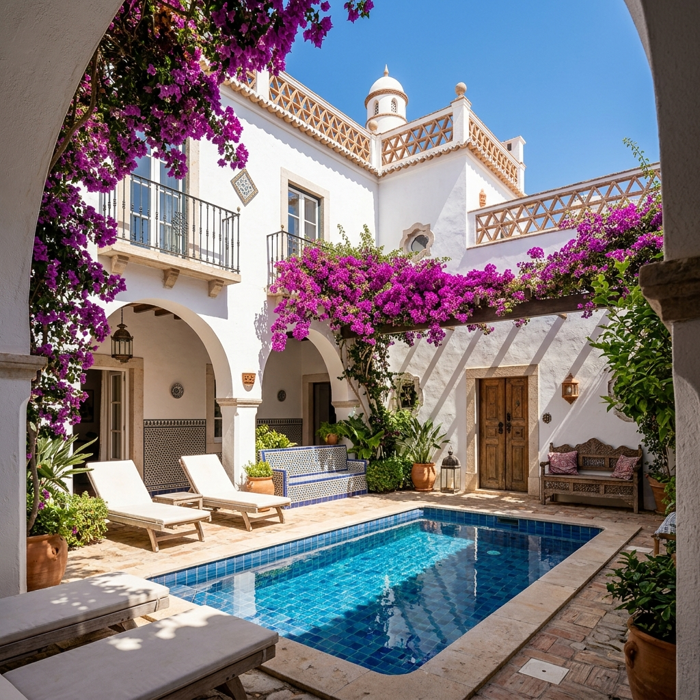

Casa da Pintora Instagram
location_on Olhão, Portugal
Photo Gallery




About this property
Situated in the heart of Olhão, this century-old townhouse carries the soul of a place that has lived multiple lives. Once an abandoned laundry room with stone arcades, it was carefully restored by Dutch artist Meinke Flesseman. The original tiles were lovingly preserved, and those that couldn't be saved were remade by hand by the artist herself.
Step inside and feel the warmth of the ancient walls, the play of light on the handcrafted ceramics, and a subtle invitation to slow down. More than just a place to stay, Casa da Pintora is a home brimming with history, beauty, and a deep connection to this special city by the Ria Formosa.
Layout & Sleeping Arrangements
-
Ground Floor
An expansive living area featuring a TV zone, large dining space, a fully-equipped kitchen, plus the first bedroom and bathroom.
-
Upstairs Quarters (Enfilade)
Three naturally flowing bedrooms: a massive King bedroom, a double bedroom, and a twin bedroom with two single beds. Two full bathrooms serve this sleeping area.
The Artist's Journal
The Vaulted Studio
Once an abandoned laundry room with thick stone walls, the ground floor has been transformed into a spacious, light-filled living area. Massive canvas paintings hang beneath vaulted arches.
Handcrafted Azulejos
The century-old original tiles were lovingly restored or remade by hand in a local ceramics studio, preserving historical legacy with contemporary color.
Rooftop Açoteia
The crown jewel is the glazed rooftop kitchen and viewpoint. Watch the sunset over the cubist skyline of Olhão and the Ria Formosa lagoon.
Availability
Guest Reviews
"An absolute hidden gem in Olhão. The courtyard is perfect for morning coffee and evening wine. Highly recommended!"
"Beautiful artistic touches everywhere. The location is great, just a short walk to the markets."